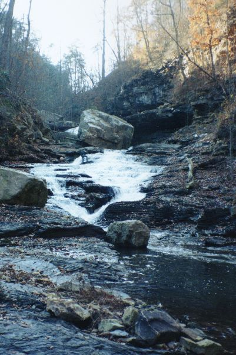
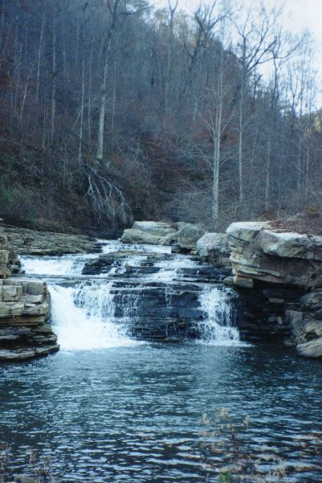

These are pictures from a scouting hike
in 1997. If you have pictures of a run, by all means send them (feedback
at left) and we'll post them instead!
|  | One of the many slides that separate the waterfalls. Note the big rock that has fallen in to provide the extra undercut angle. |
|  | A comparatively simple drop over halfway to LRC. |